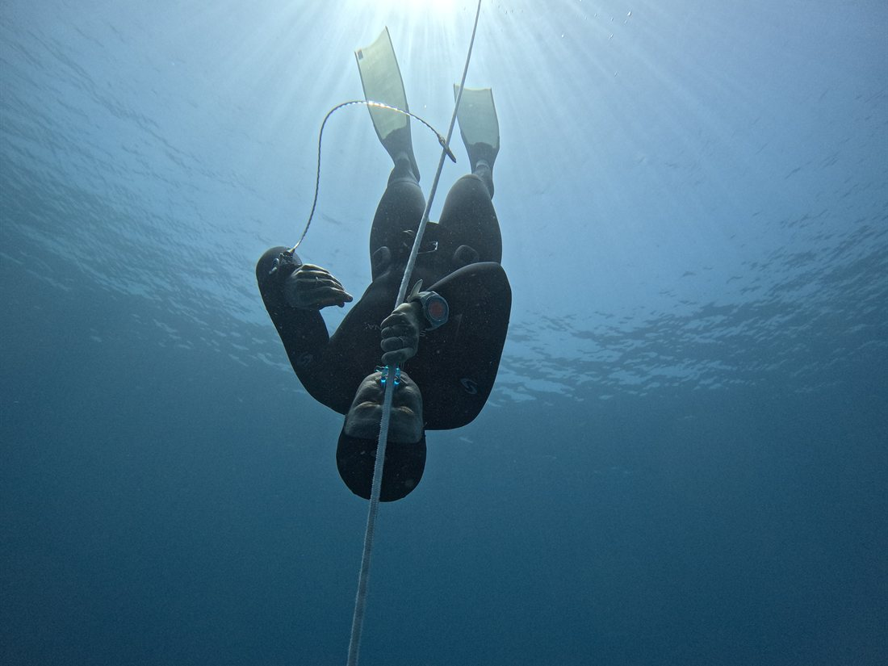

If you have ADHD, you already know the feeling. The mind is a crowded highway at rush hour: a dozen thoughts changing lanes at once, a constant hunt for the next interesting thing, and no obvious exit. So when someone hands you a meditation app and says "just sit still and clear your mind," it can feel less like medicine and more like a punishment. The instruction to do nothing is exactly the thing the ADHD brain cannot do.
And yet, more and more, therapists and psychologists are sending people to a place where the mind goes genuinely, profoundly silent. Not a cushion. Not an app. The sea.
At Freediving Brain we have seen a steady stream of students arrive with the same sentence: "My therapist suggested I try this." They come nervous, often skeptical, carrying years of being told to calm down. And then they take a single breath, submerge, and feel something most of them have never felt while awake: stillness that arrives on its own.
A personal note from the founder
For my entire life, my mind was a crowded room. I have ADHD. That means living with a brain that is always hunting for the next stimulus, juggling a dozen things, and struggling to find the off switch. On land, meditation felt like a chore, an impossible request to sit still with a roaring head.
Then I took a single breath and submerged. The moment the water met my face, everything slowed. The static disappeared. For the first time I was not fighting my brain for a moment of peace. The ocean simply handed it to me.
Freediving did not just become my profession. It became my healing. So when therapists send their clients to the water, I understand exactly what they are reaching for, because I found it myself.
Why "just relax" doesn't work
The ADHD brain runs low on dopamine and norepinephrine, the chemicals that drive focus, motivation, and reward. To compensate, it seeks stimulation constantly. Quiet, low-input environments do not soothe an ADHD brain; they starve it, and a starved brain gets louder, not calmer. This is why the standard advice to find a silent room and empty your mind so often backfires.
Freediving solves the problem from a completely different direction. Instead of removing stimulation and asking the mind to settle, it floods the brain with one enormous, all-consuming task, then lets biology do the rest. You do not have to quiet your mind. The water quiets it for you.
What the water does, four mechanisms
This is not vague wellness language. There are four specific, well-documented things that happen when a person holds their breath and submerges, and each one targets a part of the ADHD experience directly.
01
The dopamine paradox, high stimulation creates deep calm
A dive is novel, vivid, and high-stakes. It demands one hundred percent of your attention for safety and technique, which finally gives the stimulation-hungry brain exactly what it craves. With every channel occupied by one task, the background noise has nowhere to play. The ADHD mind drops into a state of hyperfocus it rarely reaches on land.
02
The dive reflex, biology flips the switch
The moment water touches the face during a breath-hold, the Mammalian Dive Reflex fires: the heart slows, and the nervous system shifts from fight-or-flight toward rest-and-digest. You do not have to talk yourself into calm. Immersion triggers it automatically, through the body.
03
The sensory sanctuary, the world goes quiet
ADHD is closely tied to sensory gating difficulties: the brain struggles to filter clutter, so it fatigues. Underwater, sound muffles, vision narrows to soft blue, and gravity disappears. There are no notifications, no movement in the corner of your eye, nothing demanding anything. The overloaded filter finally gets to rest.
04
Distress tolerance, learning to sit with the urge
When the urge to breathe arrives, the impulse is to react instantly. Freediving teaches the opposite: notice the sensation, accept it, stay relaxed. Practised again and again, this rewires your relationship with discomfort, a skill that follows you straight back onto dry land.
The dopamine paradox
It sounds backwards that the most stimulating thing you can do would be the most calming, but for an ADHD brain it makes perfect sense. The restlessness you feel in a quiet room is the brain searching for input. Give it a single, rich, important task and the search ends. The mind is not fighting to focus; it is finally allowed to.
A dive is that task. Preparing the body, relaxing every muscle, reading the water, equalising, staying aware of your buddy. There is simply no spare attention left over to spin. People with ADHD often describe their first real dive as the first time their thoughts ever went truly quiet while they were fully awake. That is not an accident. It is the brain getting exactly the kind of engagement it has been asking for all along.
A physiological off-switch
For someone whose nervous system sits permanently on high alert, the most important thing about freediving is that the calm does not depend on willpower. The Mammalian Dive Reflex is hardware, present in every human, triggered by two simple conditions: cool water on the face and a held breath. When both are present, the body begins to slow itself down without asking permission.
The slow, controlled breathing before a dive stimulates the vagus nerve, the main highway of the rest-and-digest system. Immersion deepens the effect. For an anxious, over-revved nervous system, the water acts like a physical dimmer switch on the whole alarm.
10–25%
Heart-rate drop the body can reach soon after the face meets the water
1
One breath, one focus, the whole mind pulled to a single point
0
Notifications, pings, or demands beneath the surface
Bottom-up
Changing the brain through the body, not by force of thought
The underwater sanctuary
On land, the ADHD brain spends enormous energy filtering: the hum of a fridge, a phone lighting up, someone shifting in their chair. Each of these is a small tax, and by the end of a day the bill is exhaustion. Underwater, that tax stops. The input collapses to almost nothing, and for once there is nothing to filter at all.

Below the surface there is nothing to filter, nothing to chase, only your own breath and the blue
It is one of the very few places on earth designed, by accident, to give an overstimulated brain a complete break. No screens. No interruptions. No corner-of-the-eye movement. Just your body and the water, and the strange, beautiful realisation that nothing is asking anything of you.
Learning to sit with the urge
Emotional regulation and a low tolerance for internal discomfort are part of the ADHD picture. The urge to act now, to escape the uncomfortable feeling immediately, is familiar to anyone who lives with it. Freediving meets that exact pattern head-on, gently and on your own terms.
When the urge to breathe arrives during a dive, it is uncomfortable, but it is not danger. Under a calm instructor's guidance you learn to observe it, soften around it, and stay relaxed rather than reacting. Each time you do, you teach your nervous system a profound lesson: a strong sensation can be felt without being obeyed. That is distress tolerance, built rep by rep, and it transfers directly to the moments on land when everything feels urgent and nothing actually is.
For instructors: teaching the ADHD diver
Teaching a student with ADHD is not about pushing performance. It is about building a safe, meditative relationship with the water first, and letting depth and time take care of themselves later. Telling an ADHD student to "just relax" does not work, and we know it does not work. Instead we hand them the physical triggers, the cool water, the long exhale, the dive reflex, and let biology carry the load that willpower never could.
Success is redefined, too. For a neurodivergent student, a good dive is not measured in metres. It is the moment they clip into the buoy, look down into the blue, and feel an unfamiliar sense of safety and stillness settle over them. That is the win. Everything else is a bonus.
Safety note for beginners
Early training should focus entirely on comfort, relaxation, and connection to the water. Techniques that deliberately push high CO₂ or low oxygen belong much later, if at all. The goal at the start is to build a calm sanctuary, never to chase limits before the mind is ready. Always train with a certified instructor and a buddy.
Water as medicine
Therapists are realising that you cannot always think your way out of a hyperactive brain. Top-down approaches have limits. Sometimes you need the opposite: a bottom-up route that uses the body and the environment to change the state of the mind. Freediving does precisely that. It takes a fast, restless mind, grounds it in a single breath, and lowers it into a world of complete stillness.
If your therapist suggested freediving, they are onto something real. And if you have ADHD and you have always suspected there must be a place where your brain finally goes quiet, there is. We would be honoured to take you there, one calm breath at a time.
Further reading
- Porges, S. W. The Polyvagal Theory (2011), how the vagus nerve and the body's sense of safety regulate the nervous system.
- Volkow, N. D. and colleagues, neuroimaging research linking ADHD to differences in dopamine signalling (National Institute on Drug Abuse).
- Diving-physiology reviews of the human Mammalian Dive Reflex and breath-hold bradycardia.
- Research on interoception and distress tolerance in emotional self-regulation.
General references on the underlying neuroscience. Freediving is presented here as a complementary practice, not a clinically proven treatment for ADHD.